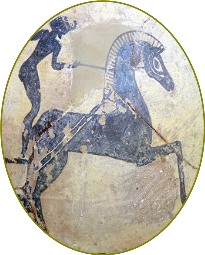

RTR: Imperium Surrectum
RTR: Imperium SurrectumRetinue — B
← all retinue · all traits · wiki index
29 retinue members whose name begins with B. A · B · C · D · E · F · G · H · I · J · K · L · M · N · O · P · Q · R · S · T · U · V · W · X · Y · Z
Babylonian Historian
 never alongside Historian · never for 7 of the cultures.
never alongside Historian · never for 7 of the cultures.
Effects: +1 Influence
This historian has chronicled the rise and fall of Babylon in detail, making the knowledge of Babylon’s important traditions and glorious past accessible to its new kings and to educated persons throughout the empire. His loyalty to your cause makes him an asset.
Acquisition is tied to the trait: Ignorant.
Cultures that never receive it (7)
Gallic · Germanic · Dacian · Celtiberian · Brittonic · Thracian · Scythian
How it is gained — ending a turn in a settlement
| When | Chance | Conditions | When | Chance | Conditions | ||||||
|---|---|---|---|---|---|---|---|---|---|---|---|
| ending a turn in a settlement | 3% | over 90% of his movement left · the settlement has Academy (Civic) or better · does not have Ignorant · in the Babylonian area of recruitment (plus hidden conditions) | ending a turn in a settlement | 3% | over 90% of his movement left · the settlement has Academy (Civic) or better · does not have Ignorant (plus hidden conditions) |
---
Bad Copper Trader
 unique — one in the world at a time · never for 8 of the cultures.
unique — one in the world at a time · never for 8 of the cultures.
Effects: -1 Influence, +3 Trading
You got him because he seemed to be a fine trader, however, after some time, complaints started arriving about his sub-standard copper and that servants were being treated rudely...
Acquisition is tied to the trait: Poor Trader.
Cultures that never receive it (8)
Libyan · Gallic · Germanic · Dacian · Celtiberian · Brittonic · Thracian · Roman
How it is gained — ending a turn in a settlement
| When | Chance | Conditions | |||||||||
|---|---|---|---|---|---|---|---|---|---|---|---|
| ending a turn in a settlement | 1% | over 90% of his movement left · has Poor Trader · the settlement has Forum or better (plus hidden conditions) |
---
Bandit
 never alongside Overseer, Torturer, Watchman.
never alongside Overseer, Torturer, Watchman.
Effects: +1 Ambush, +1 Line of Sight, +1 Unrest, -2 Law, +2 Looting
There are stories of bandits who see the error of their ways and turn to a life of virtue. This is not one of those stories. This man enjoys his villainy, and laughs in the face of law and order, while robbing it blind.
Acquisition is tied to traits: Flexible, Filthy Minded.
How it is gained — ending a turn in a settlement
| When | Chance | Conditions | When | Chance | Conditions | ||||||
|---|---|---|---|---|---|---|---|---|---|---|---|
| ending a turn in a settlement | 1% | over 90% of his movement left · the city's mood is below Disillusioned · has Filthy Minded | ending a turn in a settlement | 1% | over 90% of his movement left · the city's mood is below Disillusioned · has Flexible at level 2 or higher |
---
Barbarian Hostage
 never alongside Brehon, Clan Leader, Clan Leader · never for 13 of the cultures.
never alongside Brehon, Clan Leader, Clan Leader · never for 13 of the cultures.
Effects: +1 Influence, +1 Combat vs Gallic
Many barbarian tribes exchange hostages to ensure loyalty from another tribe. This unlucky man is probably the son of another chieftain.
Acquisition is tied to the trait: Renowned.
Cultures that never receive it (13)
Phoenician · Libyan · Caucasian · Anatolian · Iranian · Arab · Indian · Egyptian · Ethiopian · Roman · Greek · Western Hellenistic · Eastern Hellenistic
How it is gained — at the end of the character's turn
| When | Chance | Conditions | |||||||||
|---|---|---|---|---|---|---|---|---|---|---|---|
| at the end of the character's turn | 2% | ended the turn in a settlement · over 90% of his movement left · the settlement has Governor's Palace or better · has Renowned at level 2 or higher · of Gallic, Celtiberian, Brittonic, Germanic, Dacian or Thracian culture · is a general |
---
Barbarian Slave
 never for 6 of the cultures.
never for 6 of the cultures.
Effects: +1 Combat vs Gallic, +5 Looting
Captured from the wild frontiers, this slave gives you an advantage in battles against fellow barbarians. When the time comes, he will help turn their savagery against them, and fill your coffers with the spoils of war.
Acquisition is tied to the trait: Pillager.
How it is gained — on enslaving a captured city
| When | Chance | Conditions | When | Chance | Conditions | When | Chance | Conditions | When | Chance | Conditions |
|---|---|---|---|---|---|---|---|---|---|---|---|
| on enslaving a captured city | 5% | the target faction is of Gallic culture · has Pillager | on enslaving a captured city | 5% | the target faction is of Brittonic culture · has Pillager | on enslaving a captured city | 5% | the target faction is of Celtiberian culture · has Pillager | on enslaving a captured city | 5% | the target faction is of Germanic culture · has Pillager |
| on enslaving a captured city | 5% | the target faction is of Thracian culture · has Pillager | on enslaving a captured city | 5% | the target faction is of Dacian culture · has Pillager |
---
Barbarian Turncoat
 never alongside British Turncoat · never for 6 of the cultures.
never alongside British Turncoat · never for 6 of the cultures.
Effects: +1 Combat vs Gallic
He may not know how to write his own name, but he sure knows how to turn against his old friends for promises of better spoils, women and drinks.
How it is gained — after a battle
| When | Chance | Conditions | When | Chance | Conditions | When | Chance | Conditions | |||
|---|---|---|---|---|---|---|---|---|---|---|---|
| after a battle | 5% | won the battle · killed at least 60% of the enemy · fought a faction of Gallic culture · Influence 3 or more · is a general | after a battle | 5% | won the battle · killed at least 60% of the enemy · fought a faction of Celtiberian culture · Influence 3 or more · is a general | after a battle | 5% | won the battle · killed at least 60% of the enemy · fought a faction of Germanic culture · Influence 4 or more |
---
Barber
 never alongside Master Embalmer, Beautician, Illusionist · never for 9 of the cultures.
never alongside Master Embalmer, Beautician, Illusionist · never for 9 of the cultures.
Effects: -1 Influence, +1 Law
To cut hair is to cut bonding between you and family, duty, worldly life.
Acquisition is tied to the trait: Stern.
Cultures that never receive it (9)
Gallic · Germanic · Dacian · Celtiberian · Brittonic · Thracian · Phoenician · Libyan · Roman
How it is gained — ending a turn in a settlement
| When | Chance | Conditions | |||||||||
|---|---|---|---|---|---|---|---|---|---|---|---|
| ending a turn in a settlement | 2% | has Stern · over 90% of his movement left · belongs to Trinovantes |
---
Barber of the Gods

Effects: +1 Influence
This man works in the administration of a local temple, providing a sacred service during the rigid liturgy. He is in charge of both cutting the hair of those who offer their own hair to the gods and carrying out the shaving of the statue of the gods in the daily liturgy of the temple (a rite which has its origins in Mesopotamia).
Acquisition is tied to traits: Reverent, Wealthy.
How it is gained — ending a turn in a settlement
---
Bard
 never for 13 of the cultures.
never for 13 of the cultures.
Effects: +1 Influence
Songs of your deeds will echo through eternity! Unless you don’t pay him, in which case he might ‘accidentally’ forget a verse or two…
Cultures that never receive it (13)
Phoenician · Libyan · Caucasian · Anatolian · Iranian · Arab · Indian · Egyptian · Ethiopian · Greek · Western Hellenistic · Eastern Hellenistic · Roman
How it is gained — ending a turn in a settlement
| When | Chance | Conditions | |||||||||
|---|---|---|---|---|---|---|---|---|---|---|---|
| ending a turn in a settlement | 2% | over 90% of his movement left · the settlement has Feasting Hall (Leisure) or better (plus hidden conditions) |
---
Beastmaster

Effects: +1 Cavalry Command, +3 Training Animal Units
He tames beasts with a whistle and a sharp stick, making lions purr and horses gallop like the wind. But be careful, he also seems to enjoy their company more than yours.
Acquisition is tied to the trait: Likes the Dark.
How it is gained — ending a turn in a settlement, at the end of the character's turn
| When | Chance | Conditions | When | Chance | Conditions | When | Chance | Conditions | |||
|---|---|---|---|---|---|---|---|---|---|---|---|
| ending a turn in a settlement | 1% | has Likes the Dark · over 90% of his movement left · the settlement has Hunting Grounds (Rural) or better · has Likes the Dark | at the end of the character's turn | 1% | ended the turn in a settlement · over 90% of his movement left · the settlement has Horse Trainer (Rural) or better · has Likes the Dark · is a general | ending a turn in a settlement | 2% | over 90% of his movement left · the settlement has Barracks and Armoury or better · has Likes the Dark · is a general |
---
Beautician
 never alongside Master Embalmer, Barber, Illusionist · never for 7 of the cultures.
never alongside Master Embalmer, Barber, Illusionist · never for 7 of the cultures.
Effects: +1 Influence
As an authority figure you must look good for every occasion, even battle.
Acquisition is tied to the trait: Lover of Beauty.
Cultures that never receive it (7)
Gallic · Germanic · Dacian · Celtiberian · Brittonic · Thracian · Roman
How it is gained — ending a turn in a settlement
| When | Chance | Conditions | When | Chance | Conditions | When | Chance | Conditions | When | Chance | Conditions |
|---|---|---|---|---|---|---|---|---|---|---|---|
| ending a turn in a settlement | 4% | has Lover of Beauty · over 90% of his movement left · the settlement has Large Forum or better | ending a turn in a settlement | 4% | has Lover of Beauty · over 90% of his movement left · the settlement has Large Forum or better · belongs to Ptolemaic Empire | ending a turn in a settlement | 4% | has Lover of Beauty · over 90% of his movement left · the settlement has Awesome Temple or better | ending a turn in a settlement | 2% | has Lover of Beauty · over 90% of his movement left · the settlement has Local Healer (Healing) or better |
| ending a turn in a settlement | 2% | has Lover of Beauty · over 90% of his movement left · the settlement has Public Baths (Sanitation) or better |
---
Beggar
 never alongside Guide, Herbalist.
never alongside Guide, Herbalist.
Effects: +1 Subterfuge
This beggar has a talent for blending in, appearing harmless as he gathers knowledge from those who think they’re safe.
How it is gained — ending a turn in a settlement
| When | Chance | Conditions | |||||||||
|---|---|---|---|---|---|---|---|---|---|---|---|
| ending a turn in a settlement | 1% | the settlement has Local Market or better · over 90% of his movement left · is a spy |
---
Bematist
 never alongside Geographer, Geometer, Surveyor · never for 16 of the cultures.
never alongside Geographer, Geometer, Surveyor · never for 16 of the cultures.
Effects: +1 Management, +1 Siege Defence, +2 Movement Points
This man is a highly skilled professional surveyor who measures distances by precisely counting their paces. He's crucial for military logistics, road building and mapping.
Acquisition is tied to the trait: Understanding of Logistics.
Cultures that never receive it (16)
Phoenician · Libyan · Caucasian · Anatolian · Iranian · Arab · Indian · Egyptian · Ethiopian · Gallic · Germanic · Dacian · Celtiberian · Brittonic · Thracian · Roman
How it is gained — at the end of the character's turn
| When | Chance | Conditions | When | Chance | Conditions | ||||||
|---|---|---|---|---|---|---|---|---|---|---|---|
| at the end of the character's turn | 1% | under 5% of his movement left · is a general | at the end of the character's turn | 2% | under 5% of his movement left · has Understanding of Logistics · is a general |
---
Berber Turncoat
 never for 2 of the cultures.
never for 2 of the cultures.
Effects: +1 Combat vs Phoenician
Every man has his price, and this one found his among the enemy. Now, he turns his knowledge of the desert and its people against his former kin, proving that betrayal can be a powerful weapon.
Cultures that never receive it (2)
How it is gained — after a battle
| When | Chance | Conditions | |||||||||
|---|---|---|---|---|---|---|---|---|---|---|---|
| after a battle | 5% | won the battle · killed at least 60% of the enemy · fought a faction of Phoenician culture · Influence 4 or more · is a general |
---
Berossus
 unique — one in the world at a time · never alongside Astrologer, Historian · never for 11 of the cultures.
unique — one in the world at a time · never alongside Astrologer, Historian · never for 11 of the cultures.
Effects: +2 Management, +1 Influence
A Hellenistic-era Babylonian writer and astronomer who wrote a history of Babylonia from the Babylonian perspective and for a Greek audience. He also credits for invention of the semi-circular sundial…Well served device, isn’t it?
Acquisition is tied to the trait: Philosophically Inclined.
Cultures that never receive it (11)
Phoenician · Libyan · Gallic · Germanic · Dacian · Celtiberian · Brittonic · Thracian · Roman · Egyptian · Ethiopian
How it is gained — at the end of the character's turn
| When | Chance | Conditions | |||||||||
|---|---|---|---|---|---|---|---|---|---|---|---|
| at the end of the character's turn | 40% | ended the turn in a settlement · over 90% of his movement left · the settlement has Small School (Civic) or better · is a general · from turn 1 on · up to turn 10 · has Philosophically Inclined |
---
Bibliophylax
 never for 14 of the cultures.
never for 14 of the cultures.
Effects: +1 Management
Bibliophylax is an official who manages the archives in the capital and in provincial cities in the Hellenistic kingdoms.
Cultures that never receive it (14)
Gallic · Germanic · Dacian · Celtiberian · Brittonic · Thracian · Phoenician · Libyan · Caucasian · Anatolian · Iranian · Arab · Indian · Roman
How it is gained — at the end of the character's turn
| When | Chance | Conditions | When | Chance | Conditions | When | Chance | Conditions | |||
|---|---|---|---|---|---|---|---|---|---|---|---|
| at the end of the character's turn | 10% | belongs to Antigonid Kingdom · is a general · is not the faction heir · is not the faction leader · Management above 2 · Antigonid Kingdom holds above 35 settlements · no one in his faction has Bibliophylax | at the end of the character's turn | 10% | belongs to Seleucid Empire · is not the faction heir · is not the faction leader · Management above 2 · Seleucid Empire holds above 35 settlements · no one in his faction has Bibliophylax | at the end of the character's turn | 10% | belongs to Ptolemaic Empire · is a general · is not the faction heir · is not the faction leader · Management above 2 · Ptolemaic Empire holds above 35 settlements · no one in his faction has Bibliophylax |
---
Bilistiche

unique — one in the world at a time · never for 15 of the cultures.Effects: +2 Fertility, +1 Influence
Ptolemy II had a Macedonian mistress called Bilistiche. Though women were not allowed at the Olympic Games, the young Bilistiche, who was an excellent horse rider, participated in the chariot races: Slaves would do the actual job, but the owner of the chariots would receive the honours. Therefore, Bilistiche registered her own chariot and her horses for the games in 264 BC, and against all expectations, won the race. Four years later, she repeated the victory. Subsequently, she became one of the lovers of Ptolemy II, giving birth to a son called Ptolemaios Andromachou and being appointed to a religious office. She later received her own cult as Aphrodite Bilistiche and was buried underneat the Serapion in Alexandria.
Cultures that never receive it (15)
Gallic · Germanic · Dacian · Celtiberian · Brittonic · Thracian · Phoenician · Libyan · Caucasian · Anatolian · Iranian · Arab · Indian · Ethiopian · Roman
How it is gained — ending a turn in a settlement
| When | Chance | Conditions | |||||||||
|---|---|---|---|---|---|---|---|---|---|---|---|
| ending a turn in a settlement | 60% | is a general · is the faction leader · belongs to Ptolemaic Empire · from turn 40 on · up to turn 100 |
---
Biographer
 never for 7 of the cultures.
never for 7 of the cultures.
Effects: +1 Influence
A great man's great deeds need to be properly celebrated! Thankfully, this one’s a master of writing... and embellishing, if the coin is right.
Acquisition is tied to traits: Confident Attacker, Fond of Linguistics, Arrogant.
Cultures that never receive it (7)
Gallic · Germanic · Dacian · Celtiberian · Brittonic · Thracian · Scythian
How it is gained — ending a turn in a settlement
| When | Chance | Conditions | When | Chance | Conditions | When | Chance | Conditions | When | Chance | Conditions |
|---|---|---|---|---|---|---|---|---|---|---|---|
| ending a turn in a settlement | 1% | has Confident Attacker at level 2 or higher · over 90% of his movement left · has Confident Attacker at level 2 or higher | ending a turn in a settlement | 1% | over 90% of his movement left · Influence 7 or more (plus hidden conditions) | ending a turn in a settlement | 1% | has Arrogant · over 90% of his movement left · Influence 5 or more | ending a turn in a settlement | 2% | has Fond of Linguistics at level 2 or higher · over 90% of his movement left · the settlement has Small School (Civic) or better |
| ending a turn in a settlement | 1% | over 90% of his movement left · the settlement has Small School (Civic) or better · Influence 7 or more · is a general |
---
Bion of Borysthenes
 unique — one in the world at a time · never alongside Satirist, Talented Slave · never for 13 of the cultures.
unique — one in the world at a time · never alongside Satirist, Talented Slave · never for 13 of the cultures.
Effects: +1 Management, +2 Unrest
A Cynic philosopher who after being sold into slavery, and then released, moved to Athens, where he studied in almost every school of philosophy available. It is, however, for his Cynic-style diatribes that he is chiefly remembered, for he satirized the foolishness of people and even attacked the gods.
Cultures that never receive it (13)
Caucasian · Anatolian · Iranian · Arab · Indian · Dacian · Celtiberian · Brittonic · Thracian · Scythian · Phoenician · Egyptian · Libyan
How it is gained — at the end of the character's turn
| When | Chance | Conditions | |||||||||
|---|---|---|---|---|---|---|---|---|---|---|---|
| at the end of the character's turn | 40% | ended the turn in a settlement · over 90% of his movement left · the settlement has Small School (Civic) or better · not of Gallic culture · not of Celtiberian culture · not of Brittonic culture · not of Germanic culture · not of Dacian culture · not of Thracian culture · not of Scythian culture · is a general · from turn 1 on · up to turn 60 · Influence above 3 |
---
Blacksmith
 never alongside Armourer, Weaponsmith, Rune Engraver.
never alongside Armourer, Weaponsmith, Rune Engraver.
Effects: +1 Training Units, +15 Siege Engineering, +1 Squalor
With fire in his forge and iron in his hands, this man bends metal to his will. He may sacrifice the purity of nature for iron and steel, but who cares? You can’t win wars with flowers.
How it is gained — ending a turn in a settlement
| When | Chance | Conditions | When | Chance | Conditions | ||||||
|---|---|---|---|---|---|---|---|---|---|---|---|
| ending a turn in a settlement | 2% | over 90% of his movement left · the settlement has Blacksmith (Industry) or better · 10% chance · is a general | ending a turn in a settlement | 2% | over 90% of his movement left · the settlement has Library of Pergamum · the settlement has Blacksmith (Industry) or better · 10% chance · is a general |
---
Blind Poet
 unique — one in the world at a time · never alongside Poisoner, Beggar · never for 7 of the cultures.
unique — one in the world at a time · never alongside Poisoner, Beggar · never for 7 of the cultures.
Effects: +1 Subterfuge
Though sightless, he speaks truths in verse, often revealing more than he lets on. As the crowd listens, few notice he’s observing them in his own way.
Cultures that never receive it (7)
Gallic · Germanic · Dacian · Celtiberian · Brittonic · Thracian · Scythian
How it is gained — ending a turn in a settlement
| When | Chance | Conditions | |||||||||
|---|---|---|---|---|---|---|---|---|---|---|---|
| ending a turn in a settlement | 1% | the settlement has Local Market or better · over 90% of his movement left · is not a general · is not a family member · is not a diplomat · is not an admiral · is not a merchant |
---
Blind Prophet
 never alongside Wilderness Prophet.
never alongside Wilderness Prophet.
Effects: +1 Influence, -1 Personal Security
"Make way! Make way for the One whose coming was foretold!"
Acquisition is tied to the trait: Pawn of the Gods.
How it is gained — ending a turn in a settlement
| When | Chance | Conditions | |||||||||
|---|---|---|---|---|---|---|---|---|---|---|---|
| ending a turn in a settlement | 1% | has Pawn of the Gods · over 90% of his movement left |
---
Blood-Sweating Horse
 never alongside Trusty Steed, Senatorial Horse, Finely Bred Horse · never for 5 of the cultures.
never alongside Trusty Steed, Senatorial Horse, Finely Bred Horse · never for 5 of the cultures.
Effects: +1 Cavalry Command, +1 Influence, +3 Movement Points
This is one of the fabled, blood-sweating horses of legendary fame. True to the breed's reputation, this superb animal offers unrivalled speed and endurance to his master. His rider will be able to cover great distances at amazing speeds both when traveling and in battle. Thus he is more likely to appreciate and understand the uses of cavalry for war.
Cultures that never receive it (5)
Phoenician · Libyan · Egyptian · Ethiopian · Roman
Granted by events.
---
Body Slave

Effects: +1 Influence, -1 Personal Security
Great men have better things to do than dress themselves and clean their own armour.
How it is gained — on enslaving a captured city
| When | Chance | Conditions | |||||||||
|---|---|---|---|---|---|---|---|---|---|---|---|
| on enslaving a captured city | 3% | the target faction is not of Gallic culture · the target faction is not of Brittonic culture · the target faction is not of Celtiberian culture · the target faction is not of Germanic culture · the target faction is not of Thracian culture · the target faction is not of Dacian culture · the target faction is not of Scythian culture · Management 3 or more |
---
Bodyguard

Effects: +2 Personal Security, +2 Bodyguard Valour
This man ensures that those who plot against you in the shadows never live to see the light of day.
Acquisition is tied to the trait: Watchful.
How it is gained — on surviving an assassination attempt, ending a turn in a settlement, at the end of the character's turn
| When | Chance | Conditions | When | Chance | Conditions | When | Chance | Conditions | |||
|---|---|---|---|---|---|---|---|---|---|---|---|
| on surviving an assassination attempt | 30% | has Watchful · Command 3 or more · is a general | ending a turn in a settlement | 2% | is a general · over 90% of his movement left · Command 3 or more · 10% chance | at the end of the character's turn | 2% | ended the turn in a settlement · over 90% of his movement left · the settlement has Barracks and Armoury or better · Command 3 or more · is a general |
---
Brehon
 never alongside Barbarian Hostage, Clan Leader, Clan Leader · never for 13 of the cultures.
never alongside Barbarian Hostage, Clan Leader, Clan Leader · never for 13 of the cultures.
Effects: +1 Command, +2 Law
Local judge who was elected in the Celtic world. There was no restriction on class to become brehon as they could come from any of free man.
Cultures that never receive it (13)
Phoenician · Libyan · Caucasian · Anatolian · Iranian · Arab · Indian · Egyptian · Ethiopian · Roman · Greek · Western Hellenistic · Eastern Hellenistic
How it is gained — at the end of the character's turn
| When | Chance | Conditions | When | Chance | Conditions | When | Chance | Conditions | When | Chance | Conditions |
|---|---|---|---|---|---|---|---|---|---|---|---|
| at the end of the character's turn | 2% | ended the turn in a settlement · over 90% of his movement left · the settlement has Governor's Palace or better · Influence above 5 · belongs to Arverni · is a general | at the end of the character's turn | 2% | ended the turn in a settlement · over 90% of his movement left · the settlement has Awesome Temple or better · Influence above 5 · belongs to Arverni · is a general | at the end of the character's turn | 2% | ended the turn in a settlement · over 90% of his movement left · the settlement has Magistrates' Court (Civic) or better · Influence above 5 · belongs to Arverni · is a general | at the end of the character's turn | 2% | ended the turn in a settlement · over 90% of his movement left · the settlement has Awesome Temple or better · Influence above 5 · belongs to Arverni · is a general |
| at the end of the character's turn | 2% | ended the turn in a settlement · over 90% of his movement left · the settlement has Governor's Palace or better · Influence above 5 · belongs to Trinovantes · is a general | at the end of the character's turn | 2% | ended the turn in a settlement · over 90% of his movement left · the settlement has Physician's Clinics (Healing) or better · Influence above 5 · belongs to Trinovantes · is a general | at the end of the character's turn | 2% | ended the turn in a settlement · over 90% of his movement left · the settlement has Awesome Temple or better · Influence above 5 · belongs to Trinovantes · is a general | at the end of the character's turn | 2% | ended the turn in a settlement · over 90% of his movement left · the settlement has Awesome Temple or better · Influence above 5 · belongs to Trinovantes · is a general |
---
Brewer
 never alongside Slubberdegullion, Wine Trader.
never alongside Slubberdegullion, Wine Trader.
Effects: -1 Management, +1 Troop Morale
With this man around, soldiers march a bit happier, perhaps because they’re all slightly drunk. Turns out the promise of ale does wonders for morale, but not so much for managing a city.
Acquisition is tied to the trait: Social Drinker.
How it is gained — ending a turn in a settlement
| When | Chance | Conditions | When | Chance | Conditions | When | Chance | Conditions | When | Chance | Conditions |
|---|---|---|---|---|---|---|---|---|---|---|---|
| ending a turn in a settlement | 4% | over 90% of his movement left · the settlement has Irrigation Ditches (Crops) or better · the settlement has Grape Orchards (Rural) at most · has Social Drinker · of Gallic, Celtiberian, Brittonic, Germanic, Dacian or Thracian culture | ending a turn in a settlement | 4% | over 90% of his movement left · the settlement has Pottery Kiln (Urban) or better · has Social Drinker · of Gallic, Celtiberian, Brittonic, Germanic, Dacian or Thracian culture | ending a turn in a settlement | 4% | over 90% of his movement left · the settlement has Grape Orchards (Rural) or better · has Social Drinker · of Gallic, Celtiberian, Brittonic, Germanic, Dacian or Thracian culture | ending a turn in a settlement | 2% | is a general · over 90% of his movement left · the settlement has Brewing Quarter (Urban) or better · 10% chance |
---
Britannic Warlord
 never for 14 of the cultures.
never for 14 of the cultures.
Effects: +1 Command, +1 Troop Morale, +1 Infantry Command
This man is seen as a mighty war leader by his people.
Cultures that never receive it (14)
Scythian · Phoenician · Libyan · Caucasian · Anatolian · Iranian · Arab · Indian · Roman · Greek · Western Hellenistic · Eastern Hellenistic · Egyptian · Ethiopian
How it is gained — after a battle
| When | Chance | Conditions | |||||||||
|---|---|---|---|---|---|---|---|---|---|---|---|
| after a battle | 100% | is a general · won the battle · the outcome was clear or more decisive · a field battle · battle odds below 1.5 (his strength against the enemy's) · killed at least 45% of the enemy · is not the faction leader · is not the faction heir · belongs to Trinovantes · no one in his faction has Britannic Warlord · Command 4 or more |
---
British Turncoat
never alongside Barbarian Turncoat · never for 1 of the cultures.
Effects: +1 Combat vs Gallic
When this man gets angry his face goes truly red, but so far, he has been a good ally, describing what he sees and saving us from possible ambushes! In 2000 years, there might be a barbarian who’s truly a great commander, but until then this man will help out in exasperation where he can…
Cultures that never receive it (1)
How it is gained — after a battle
| When | Chance | Conditions | |||||||||
|---|---|---|---|---|---|---|---|---|---|---|---|
| after a battle | 5% | won the battle · killed at least 60% of the enemy · fought a faction of Brittonic culture · Influence 3 or more · is a general |